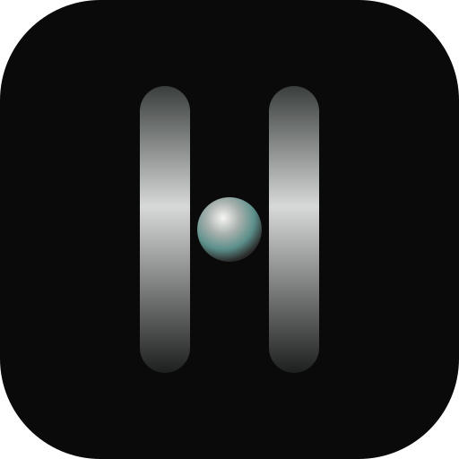
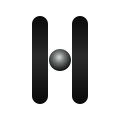

Primary logo · recut lockup + modeled mark

Dimensional on void
Ivory on void

Matte, not luminous
Aa
Primary — Newsreader
Secondary — Inter
Meta — IBM Plex Mono
Disciplined thinking. Measurable impact.
Deeper questions. Bolder possibilities.
Quiet confidence. Lasting value.